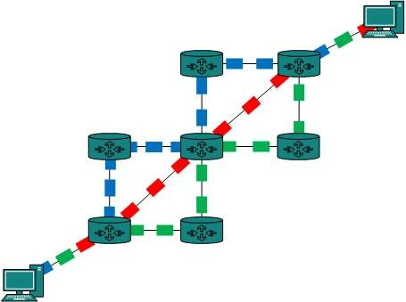

DCN - Overview
A system of interconnected computers and computerized peripherals such as printers is called computer network. This interconnection among computers facilitates information sharing among them. Computers may connect to each other by either wired or wireless media.
Classification of Computer Networks
Computer networks are classified based on various factors.They includes:
- Geographical span
- Inter-connectivity
- Administration
- Architecture
Geographical Span
Geographically a network can be seen in one of the following categories:
- It may be spanned across your table, among Bluetooth enabled devices,. Ranging not more than few meters.
- It may be spanned across a whole building, including intermediate devices to connect all floors.
- It may be spanned across a whole city.
- It may be spanned across multiple cities or provinces.
- It may be one network covering whole world.
Inter-Connectivity
Components of a network can be connected to each other differently in some fashion. By connectedness we mean either logically , physically , or both ways.
- Every single device can be connected to every other device on network, making the network mesh.
- All devices can be connected to a single medium but geographically disconnected, created bus like structure.
- Each device is connected to its left and right peers only, creating linear structure.
- All devices connected together with a single device, creating star like structure.
- All devices connected arbitrarily using all previous ways to connect each other, resulting in a hybrid structure.
Administration
From an administrator’s point of view, a network can be private network which belongs a single autonomous system and cannot be accessed outside its physical or logical domain.A network can be public which is accessed by all.
Network Architecture
- There can be one or more systems acting as Server. Other being Client, requests the Server to serve requests.Server takes and processes request on behalf of Clients.
- Two systems can be connected Point-to-Point, or in back-to-back fashion. They both reside at the same level and called peers.
- There can be hybrid network which involves network architecture of both the above types.
Computer networks can be discriminated into various types such as Client-Server,peer-to-peer or hybrid, depending upon its architecture.
Network Applications
Computer systems and peripherals are connected to form a network.They provide numerous advantages:
- Resource sharing such as printers and storage devices
- Exchange of information by means of e-Mails and FTP
- Information sharing by using Web or Internet
- Interaction with other users using dynamic web pages
- IP phones
- Video conferences
- Parallel computing
- Instant messaging
DCN - Computer Network Types
Generally, networks are distinguished based on their geographical span. A network can be as small as distance between your mobile phone and its Bluetooth headphone and as large as the internet itself, covering the whole geographical world,
Personal Area Network
A Personal Area Network (PAN) is smallest network which is very personal to a user. This may include Bluetooth enabled devices or infra-red enabled devices. PAN has connectivity range up to 10 meters. PAN may include wireless computer keyboard and mouse, Bluetooth enabled headphones, wireless printers and TV remotes.
For example, Piconet is Bluetooth-enabled Personal Area Network which may contain up to 8 devices connected together in a master-slave fashion.
Local Area Network
A computer network spanned inside a building and operated under single administrative system is generally termed as Local Area Network (LAN). Usually,LAN covers an organization’ offices, schools, colleges or universities. Number of systems connected in LAN may vary from as least as two to as much as 16 million.
LAN provides a useful way of sharing the resources between end users.The resources such as printers, file servers, scanners, and internet are easily sharable among computers.
LANs are composed of inexpensive networking and routing equipment. It may contains local servers serving file storage and other locally shared applications. It mostly operates on private IP addresses and does not involve heavy routing. LAN works under its own local domain and controlled centrally.
LAN uses either Ethernet or Token-ring technology. Ethernet is most widely employed LAN technology and uses Star topology, while Token-ring is rarely seen.
LAN can be wired,wireless, or in both forms at once.
Metropolitan Area Network
The Metropolitan Area Network (MAN) generally expands throughout a city such as cable TV network. It can be in the form of Ethernet,Token-ring, ATM, or Fiber Distributed Data Interface (FDDI).
Metro Ethernet is a service which is provided by ISPs. This service enables its users to expand their Local Area Networks. For example, MAN can help an organization to connect all of its offices in a city.
Backbone of MAN is high-capacity and high-speed fiber optics. MAN works in between Local Area Network and Wide Area Network. MAN provides uplink for LANs to WANs or internet.
Wide Area Network
As the name suggests,the Wide Area Network (WAN) covers a wide area which may span across provinces and even a whole country. Generally, telecommunication networks are Wide Area Network. These networks provide connectivity to MANs and LANs. Since they are equipped with very high speed backbone, WANs use very expensive network equipment.
WAN may use advanced technologies such as Asynchronous Transfer Mode (ATM), Frame Relay, and Synchronous Optical Network (SONET). WAN may be managed by multiple administration.
Internetwork
A network of networks is called an internetwork, or simply the internet. It is the largest network in existence on this planet.The internet hugely connects all WANs and it can have connection to LANs and Home networks. Internet uses TCP/IP protocol suite and uses IP as its addressing protocol. Present day, Internet is widely implemented using IPv4. Because of shortage of address spaces, it is gradually migrating from IPv4 to IPv6.
Internet enables its users to share and access enormous amount of information worldwide. It uses WWW, FTP, email services, audio and video streaming etc. At huge level, internet works on Client-Server model.
Internet uses very high speed backbone of fiber optics. To inter-connect various continents, fibers are laid under sea known to us as submarine communication cable.
Internet is widely deployed on World Wide Web services using HTML linked pages and is accessible by client software known as Web Browsers. When a user requests a page using some web browser located on some Web Server anywhere in the world, the Web Server responds with the proper HTML page. The communication delay is very low.
Internet is serving many proposes and is involved in many aspects of life. Some of them are:
- Web sites
- Instant Messaging
- Blogging
- Social Media
- Marketing
- Networking
- Resource Sharing
- Audio and Video Streaming
DCN - Computer Network Toplogies
A Network Topology is the arrangement with which computer systems or network devices are connected to each other. Topologies may define both physical and logical aspect of the network. Both logical and physical topologies could be same or different in a same network.
Point-to-Point
Point-to-point networks contains exactly two hosts such as computer, switches or routers, servers connected back to back using a single piece of cable. Often, the receiving end of one host is connected to sending end of the other and vice-versa.

If the hosts are connected point-to-point logically, then may have multiple intermediate devices. But the end hosts are unaware of underlying network and see each other as if they are connected directly.
Bus Topology
In case of Bus topology, all devices share single communication line or cable.Bus topology may have problem while multiple hosts sending data at the same time. Therefore, Bus topology either uses CSMA/CD technology or recognizes one host as Bus Master to solve the issue. It is one of the simple forms of networking where a failure of a device does not affect the other devices. But failure of the shared communication line can make all other devices stop functioning.

Both ends of the shared channel have line terminator. The data is sent in only one direction and as soon as it reaches the extreme end, the terminator removes the data from the line.
Star Topology
All hosts in Star topology are connected to a central device, known as hub device, using a point-to-point connection. That is, there exists a point to point connection between hosts and hub. The hub device can be any of the following:
- Layer-1 device such as hub or repeater
- Layer-2 device such as switch or bridge
- Layer-3 device such as router or gateway

As in Bus topology, hub acts as single point of failure. If hub fails, connectivity of all hosts to all other hosts fails. Every communication between hosts, takes place through only the hub.Star topology is not expensive as to connect one more host, only one cable is required and configuration is simple.
Ring Topology
In ring topology, each host machine connects to exactly two other machines, creating a circular network structure. When one host tries to communicate or send message to a host which is not adjacent to it, the data travels through all intermediate hosts. To connect one more host in the existing structure, the administrator may need only one more extra cable.
Failure of any host results in failure of the whole ring.Thus, every connection in the ring is a point of failure. There are methods which employ one more backup ring.
Mesh Topology
In this type of topology, a host is connected to one or multiple hosts.This topology has hosts in point-to-point connection with every other host or may also have hosts which are in point-to-point connection to few hosts only.

Hosts in Mesh topology also work as relay for other hosts which do not have direct point-to-point links. Mesh technology comes into two types:
- Full Mesh: All hosts have a point-to-point connection to every other host in the network. Thus for every new host n(n-1)/2 connections are required. It provides the most reliable network structure among all network topologies.
- Partially Mesh: Not all hosts have point-to-point connection to every other host. Hosts connect to each other in some arbitrarily fashion. This topology exists where we need to provide reliability to some hosts out of all.
Tree Topology
Also known as Hierarchical Topology, this is the most common form of network topology in use presently.This topology imitates as extended Star topology and inherits properties of bus topology.
This topology divides the network in to multiple levels/layers of network. Mainly in LANs, a network is bifurcated into three types of network devices. The lowermost is access-layer where computers are attached. The middle layer is known as distribution layer, which works as mediator between upper layer and lower layer. The highest layer is known as core layer, and is central point of the network, i.e. root of the tree from which all nodes fork.

All neighboring hosts have point-to-point connection between them.Similar to the Bus topology, if the root goes down, then the entire network suffers even.though it is not the single point of failure. Every connection serves as point of failure, failing of which divides the network into unreachable segment.
Daisy Chain
This topology connects all the hosts in a linear fashion. Similar to Ring topology, all hosts are connected to two hosts only, except the end hosts.Means, if the end hosts in daisy chain are connected then it represents Ring topology.
Each link in daisy chain topology represents single point of failure. Every link failure splits the network into two segments.Every intermediate host works as relay for its immediate hosts.
Hybrid Topology
A network structure whose design contains more than one topology is said to be hybrid topology. Hybrid topology inherits merits and demerits of all the incorporating topologies.
The above picture represents an arbitrarily hybrid topology. The combining topologies may contain attributes of Star, Ring, Bus, and Daisy-chain topologies. Most WANs are connected by means of Dual-Ring topology and networks connected to them are mostly Star topology networks. Internet is the best example of largest Hybrid topology
DCN - Computer Network Models
Networking engineering is a complicated task, which involves software, firmware, chip level engineering, hardware, and electric pulses. To ease network engineering, the whole networking concept is divided into multiple layers. Each layer is involved in some particular task and is independent of all other layers. But as a whole, almost all networking tasks depend on all of these layers. Layers share data between them and they depend on each other only to take input and send output.
Layered Tasks
In layered architecture of Network Model, one whole network process is divided into small tasks. Each small task is then assigned to a particular layer which works dedicatedly to process the task only. Every layer does only specific work.
In layered communication system, one layer of a host deals with the task done by or to be done by its peer layer at the same level on the remote host. The task is either initiated by layer at the lowest level or at the top most level. If the task is initiated by the-top most layer, it is passed on to the layer below it for further processing. The lower layer does the same thing, it processes the task and passes on to lower layer. If the task is initiated by lower most layer, then the reverse path is taken.
Every layer clubs together all procedures, protocols, and methods which it requires to execute its piece of task. All layers identify their counterparts by means of encapsulation header and tail.
OSI Model
Open System Interconnect is an open standard for all communication systems. OSI model is established by International Standard Organization (ISO). This model has seven layers:
Application Layer: This layer is responsible for providing interface to the application user. This layer encompasses protocols which directly interact with the user.
Presentation Layer: This layer defines how data in the native format of remote host should be presented in the native format of host.
Session Layer: This layer maintains sessions between remote hosts. For example, once user/password authentication is done, the remote host maintains this session for a while and does not ask for authentication again in that time span.
Transport Layer: This layer is responsible for end-to-end delivery between hosts.
Network Layer: This layer is responsible for address assignment and uniquely addressing hosts in a network.
Data Link Layer: This layer is responsible for reading and writing data from and onto the line. Link errors are detected at this layer.
Physical Layer: This layer defines the hardware, cabling wiring, power output, pulse rate etc.
Internet Model
Internet uses TCP/IP protocol suite, also known as Internet suite. This defines Internet Model which contains four layered architecture. OSI Model is general communication model but Internet Model is what the internet uses for all its communication.The internet is independent of its underlying network architecture so is its Model. This model has the following layers:
Application Layer: This layer defines the protocol which enables user to interact with the network.For example, FTP, HTTP etc.
Transport Layer: This layer defines how data should flow between hosts. Major protocol at this layer is Transmission Control Protocol (TCP). This layer ensures data delivered between hosts is in-order and is responsible for end-to-end delivery.
Internet Layer: Internet Protocol (IP) works on this layer. This layer facilitates host addressing and recognition. This layer defines routing.
Link Layer: This layer provides mechanism of sending and receiving actual data.Unlike its OSI Model counterpart, this layer is independent of underlying network architecture and hardware.
DCN - Computer Network Security
During initial days of internet, its use was limited to military and universities for research and development purpose. Later when all networks merged together and formed internet, the data useds to travel through public transit network.Common people may send the data that can be highly sensitive such as their bank credentials, username and passwords, personal documents, online shopping details, or confidential documents.
All security threats are intentional i.e. they occur only if intentionally triggered. Security threats can be divided into the following categories:
Interruption
Interruption is a security threat in which availability of resources is attacked. For example, a user is unable to access its web-server or the web-server is hijacked.
Privacy-Breach
In this threat, the privacy of a user is compromised. Someone, who is not the authorized person is accessing or intercepting data sent or received by the original authenticated user.
Integrity
This type of threat includes any alteration or modification in the original context of communication. The attacker intercepts and receives the data sent by the sender and the attacker then either modifies or generates false data and sends to the receiver. The receiver receives the data assuming that it is being sent by the original Sender.
Authenticity
This threat occurs when an attacker or a security violator, poses as a genuine person and accesses the resources or communicates with other genuine users.
No technique in the present world can provide 100% security. But steps can be taken to secure data while it travels in unsecured network or internet. The most widely used technique is Cryptography.
Cryptography is a technique to encrypt the plain-text data which makes it difficult to understand and interpret. There are several cryptographic algorithms available present day as described below:
Secret Key
Public Key
Message Digest
Secret Key Encryption
Both sender and receiver have one secret key. This secret key is used to encrypt the data at sender’s end. After the data is encrypted, it is sent on the public domain to the receiver. Because the receiver knows and has the Secret Key, the encrypted data packets can easily be decrypted.
Example of secret key encryption is Data Encryption Standard (DES). In Secret Key encryption, it is required to have a separate key for each host on the network making it difficult to manage.
Public Key Encryption
In this encryption system, every user has its own Secret Key and it is not in the shared domain. The secret key is never revealed on public domain. Along with secret key, every user has its own but public key. Public key is always made public and is used by Senders to encrypt the data. When the user receives the encrypted data, he can easily decrypt it by using its own Secret Key.
Example of public key encryption is Rivest-Shamir-Adleman (RSA).
Message Digest
In this method, actual data is not sent, instead a hash value is calculated and sent. The other end user, computes its own hash value and compares with the one just received.If both hash values are matched, then it is accepted otherwise rejected.
Example of Message Digest is MD5 hashing. It is mostly used in authentication where user password is cross checked with the one saved on the server.
DCN - Data-link Layer Introduction
Data Link Layer is second layer of OSI Layered Model. This layer is one of the most complicated layers and has complex functionalities and liabilities. Data link layer hides the details of underlying hardware and represents itself to upper layer as the medium to communicate.
Data link layer works between two hosts which are directly connected in some sense. This direct connection could be point to point or broadcast. Systems on broadcast network are said to be on same link. The work of data link layer tends to get more complex when it is dealing with multiple hosts on single collision domain.
Data link layer is responsible for converting data stream to signals bit by bit and to send that over the underlying hardware. At the receiving end, Data link layer picks up data from hardware which are in the form of electrical signals, assembles them in a recognizable frame format, and hands over to upper layer.
Data link layer has two sub-layers:
Logical Link Control: It deals with protocols, flow-control, and error control
Media Access Control: It deals with actual control of media
Functionality of Data-link Layer
Data link layer does many tasks on behalf of upper layer. These are:
Framing
Data-link layer takes packets from Network Layer and encapsulates them into Frames.Then, it sends each frame bit-by-bit on the hardware. At receiver’ end, data link layer picks up signals from hardware and assembles them into frames.
Addressing
Data-link layer provides layer-2 hardware addressing mechanism. Hardware address is assumed to be unique on the link. It is encoded into hardware at the time of manufacturing.
Synchronization
When data frames are sent on the link, both machines must be synchronized in order to transfer to take place.
Error Control
Sometimes signals may have encountered problem in transition and the bits are flipped.These errors are detected and attempted to recover actual data bits. It also provides error reporting mechanism to the sender.
Flow Control
Stations on same link may have different speed or capacity. Data-link layer ensures flow control that enables both machine to exchange data on same speed.
Multi-Access
When host on the shared link tries to transfer the data, it has a high probability of collision. Data-link layer provides mechanism such as CSMA/CD to equip capability of accessing a shared media among multiple Systems.
DCN - Network Layer Introduction
Layer-3 in the OSI model is called Network layer. Network layer manages options pertaining to host and network addressing, managing sub-networks, and internetworking.
Network layer takes the responsibility for routing packets from source to destination within or outside a subnet. Two different subnet may have different addressing schemes or non-compatible addressing types. Same with protocols, two different subnet may be operating on different protocols which are not compatible with each other. Network layer has the responsibility to route the packets from source to destination, mapping different addressing schemes and protocols.
Layer-3 Functionalities
Devices which work on Network Layer mainly focus on routing. Routing may include various tasks aimed to achieve a single goal. These can be:
Addressing devices and networks.
Populating routing tables or static routes.
Queuing incoming and outgoing data and then forwarding them according to quality of service constraints set for those packets.
Internetworking between two different subnets.
Delivering packets to destination with best efforts.
Provides connection oriented and connection less mechanism.
Network Layer Features
With its standard functionalities, Layer 3 can provide various features as:
Quality of service management
Load balancing and link management
Security
Interrelation of different protocols and subnets with different schema.
Different logical network design over the physical network design.
L3 VPN and tunnels can be used to provide end to end dedicated connectivity.
Internet protocol is widely respected and deployed Network Layer protocol which helps to communicate end to end devices over the internet. It comes in two flavors. IPv4 which has ruled the world for decades but now is running out of address space. IPv6 is created to replace IPv4 and hopefully mitigates limitations of IPv4 too.
DCN - Transport Layer Introduction
Next Layer in OSI Model is recognized as Transport Layer (Layer-4). All modules and procedures pertaining to transportation of data or data stream are categorized into this layer. As all other layers, this layer communicates with its peer Transport layer of the remote host.
Transport layer offers peer-to-peer and end-to-end connection between two processes on remote hosts. Transport layer takes data from upper layer (i.e. Application layer) and then breaks it into smaller size segments, numbers each byte, and hands over to lower layer (Network Layer) for delivery.
Functions
This Layer is the first one which breaks the information data, supplied by Application layer in to smaller units called segments. It numbers every byte in the segment and maintains their accounting.
This layer ensures that data must be received in the same sequence in which it was sent.
This layer provides end-to-end delivery of data between hosts which may or may not belong to the same subnet.
All server processes intend to communicate over the network are equipped with well-known Transport Service Access Points (TSAPs) also known as port numbers.
End-to-End Communication
A process on one host identifies its peer host on remote network by means of TSAPs, also known as Port numbers. TSAPs are very well defined and a process which is trying to communicate with its peer knows this in advance.
For example, when a DHCP client wants to communicate with remote DHCP server, it always requests on port number 67. When a DNS client wants to communicate with remote DNS server, it always requests on port number 53 (UDP).
The two main Transport layer protocols are:
Transmission Control Protocol
It provides reliable communication between two hosts.
User Datagram Protocol
It provides unreliable communication between two hosts.
DCN - Application Layer Introduction
Application layer is the top most layer in OSI and TCP/IP layered model. This layer exists in both layered Models because of its significance, of interacting with user and user applications. This layer is for applications which are involved in communication system.
A user may or may not directly interacts with the applications. Application layer is where the actual communication is initiated and reflects. Because this layer is on the top of the layer stack, it does not serve any other layers. Application layer takes the help of Transport and all layers below it to communicate or transfer its data to the remote host.
When an application layer protocol wants to communicate with its peer application layer protocol on remote host, it hands over the data or information to the Transport layer. The transport layer does the rest with the help of all the layers below it.

There’is an ambiguity in understanding Application Layer and its protocol. Not every user application can be put into Application Layer. except those applications which interact with the communication system. For example, designing software or text-editor cannot be considered as application layer programs.
On the other hand, when we use a Web Browser, which is actually using Hyper Text Transfer Protocol (HTTP) to interact with the network. HTTP is Application Layer protocol.
Another example is File Transfer Protocol, which helps a user to transfer text based or binary files across the network. A user can use this protocol in either GUI based software like FileZilla or CuteFTP and the same user can use FTP in Command Line mode.
Hence, irrespective of which software you use, it is the protocol which is considered at Application Layer used by that software. DNS is a protocol which helps user application protocols such as HTTP to accomplish its work.
DCN - Physical Layer Introduction
Physical layer in the OSI model plays the role of interacting with actual hardware and signaling mechanism. Physical layer is the only layer of OSI network model which actually deals with the physical connectivity of two different stations. This layer defines the hardware equipment, cabling, wiring, frequencies, pulses used to represent binary signals etc.
Physical layer provides its services to Data-link layer. Data-link layer hands over frames to physical layer. Physical layer converts them to electrical pulses, which represent binary data.The binary data is then sent over the wired or wireless media.
Signals
When data is sent over physical medium, it needs to be first converted into electromagnetic signals. Data itself can be analog such as human voice, or digital such as file on the disk.Both analog and digital data can be represented in digital or analog signals.
Digital Signals
Digital signals are discrete in nature and represent sequence of voltage pulses. Digital signals are used within the circuitry of a computer system.
Analog Signals
Analog signals are in continuous wave form in nature and represented by continuous electromagnetic waves.
Transmission Impairment
When signals travel through the medium they tend to deteriorate. This may have many reasons as given:
Attenuation
For the receiver to interpret the data accurately, the signal must be sufficiently strong.When the signal passes through the medium, it tends to get weaker.As it covers distance, it loses strength.
Dispersion
As signal travels through the media, it tends to spread and overlaps. The amount of dispersion depends upon the frequency used.
Delay distortion
Signals are sent over media with pre-defined speed and frequency. If the signal speed and frequency do not match, there are possibilities that signal reaches destination in arbitrary fashion. In digital media, this is very critical that some bits reach earlier than the previously sent ones.
Noise
Random disturbance or fluctuation in analog or digital signal is said to be Noise in signal, which may distort the actual information being carried. Noise can be characterized in one of the following class:
Thermal Noise
Heat agitates the electronic conductors of a medium which may introduce noise in the media. Up to a certain level, thermal noise is unavoidable.
Intermodulation
When multiple frequencies share a medium, their interference can cause noise in the medium. Intermodulation noise occurs if two different frequencies are sharing a medium and one of them has excessive strength or the component itself is not functioning properly, then the resultant frequency may not be delivered as expected.
Crosstalk
This sort of noise happens when a foreign signal enters into the media. This is because signal in one medium affects the signal of second medium.
Impulse
This noise is introduced because of irregular disturbances such as lightening, electricity, short-circuit, or faulty components. Digital data is mostly affected by this sort of noise.
Transmission Media
The media over which the information between two computer systems is sent, called transmission media. Transmission media comes in two forms.
Guided Media
All communication wires/cables are guided media, such as UTP, coaxial cables, and fiber Optics. In this media, the sender and receiver are directly connected and the information is send (guided) through it.
Unguided Media
Wireless or open air space is said to be unguided media, because there is no connectivity between the sender and receiver. Information is spread over the air, and anyone including the actual recipient may collect the information.
Channel Capacity
The speed of transmission of information is said to be the channel capacity. We count it as data rate in digital world. It depends on numerous factors such as:
Bandwidth: The physical limitation of underlying media.
Error-rate: Incorrect reception of information because of noise.
Encoding: The number of levels used for signaling.
Multiplexing
Multiplexing is a technique to mix and send multiple data streams over a single medium. This technique requires system hardware called multiplexer (MUX) for multiplexing the streams and sending them on a medium, and de-multiplexer (DMUX) which takes information from the medium and distributes to different destinations.
Switching
Switching is a mechanism by which data/information sent from source towards destination which are not directly connected. Networks have interconnecting devices, which receives data from directly connected sources, stores data, analyze it and then forwards to the next interconnecting device closest to the destination.
Switching can be categorized as:
DCN - Network Switching
Switching is process to forward packets coming in from one port to a port leading towards the destination. When data comes on a port it is called ingress, and when data leaves a port or goes out it is called egress. A communication system may include number of switches and nodes. At broad level, switching can be divided into two major categories:
Connectionless: The data is forwarded on behalf of forwarding tables. No previous handshaking is required and acknowledgements are optional.
Connection Oriented: Before switching data to be forwarded to destination, there is a need to pre-establish circuit along the path between both endpoints. Data is then forwarded on that circuit. After the transfer is completed, circuits can be kept for future use or can be turned down immediately.
Circuit Switching
When two nodes communicate with each other over a dedicated communication path, it is called circuit switching.There 'is a need of pre-specified route from which data will travels and no other data is permitted.In circuit switching, to transfer the data, circuit must be established so that the data transfer can take place.
Circuits can be permanent or temporary. Applications which use circuit switching may have to go through three phases:
Establish a circuit
Transfer the data
Disconnect the circuit
Circuit switching was designed for voice applications. Telephone is the best suitable example of circuit switching. Before a user can make a call, a virtual path between caller and callee is established over the network.
Message Switching
This technique was somewhere in middle of circuit switching and packet switching. In message switching, the whole message is treated as a data unit and is switching / transferred in its entirety.
A switch working on message switching, first receives the whole message and buffers it until there are resources available to transfer it to the next hop. If the next hop is not having enough resource to accommodate large size message, the message is stored and switch waits.

This technique was considered substitute to circuit switching. As in circuit switching the whole path is blocked for two entities only. Message switching is replaced by packet switching. Message switching has the following drawbacks:
Every switch in transit path needs enough storage to accommodate entire message.
Because of store-and-forward technique and waits included until resources are available, message switching is very slow.
Message switching was not a solution for streaming media and real-time applications.
Packet Switching
Shortcomings of message switching gave birth to an idea of packet switching. The entire message is broken down into smaller chunks called packets. The switching information is added in the header of each packet and transmitted independently.
It is easier for intermediate networking devices to store small size packets and they do not take much resources either on carrier path or in the internal memory of switches.
Packet switching enhances line efficiency as packets from multiple applications can be multiplexed over the carrier. The internet uses packet switching technique. Packet switching enables the user to differentiate data streams based on priorities. Packets are stored and forwarded according to their priority to provide quality of service.
Start Quiz